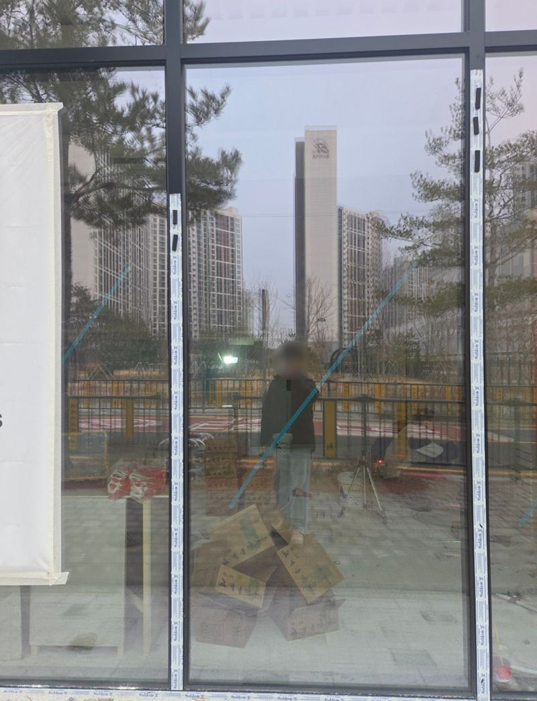
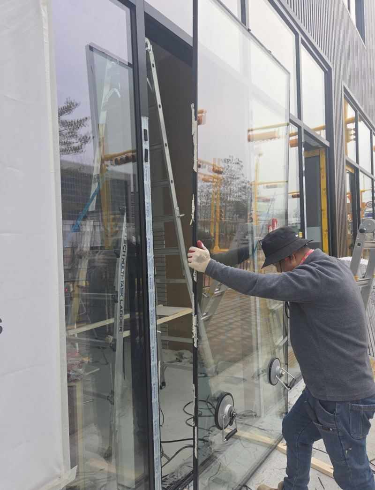
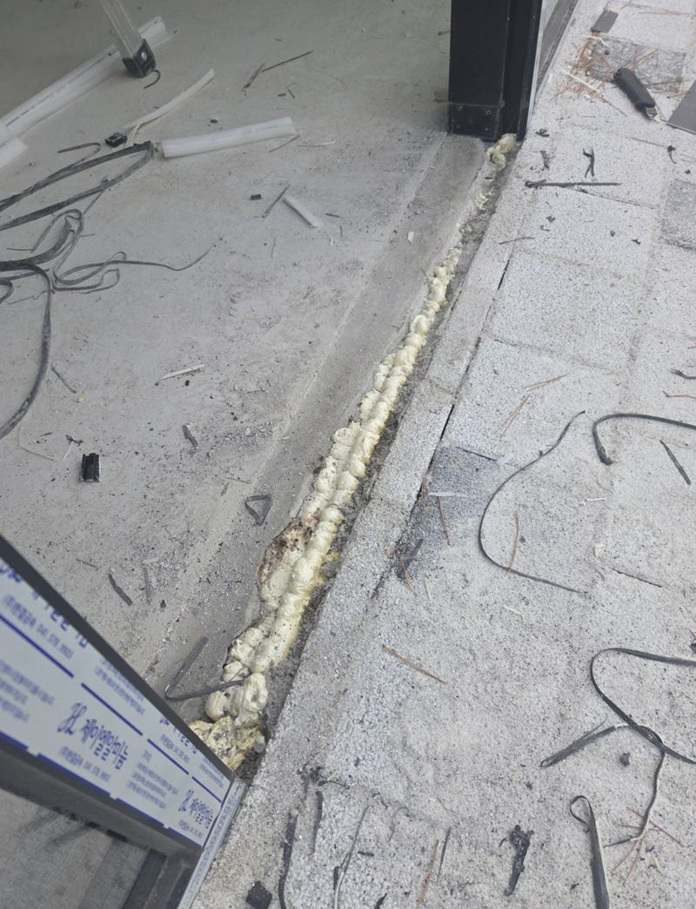
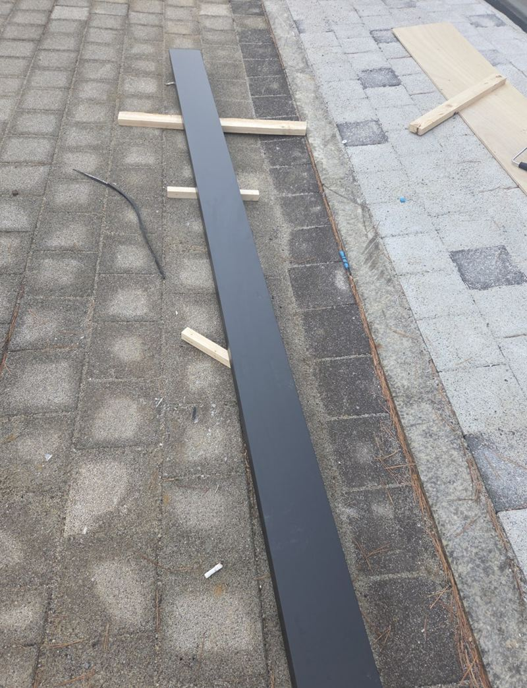
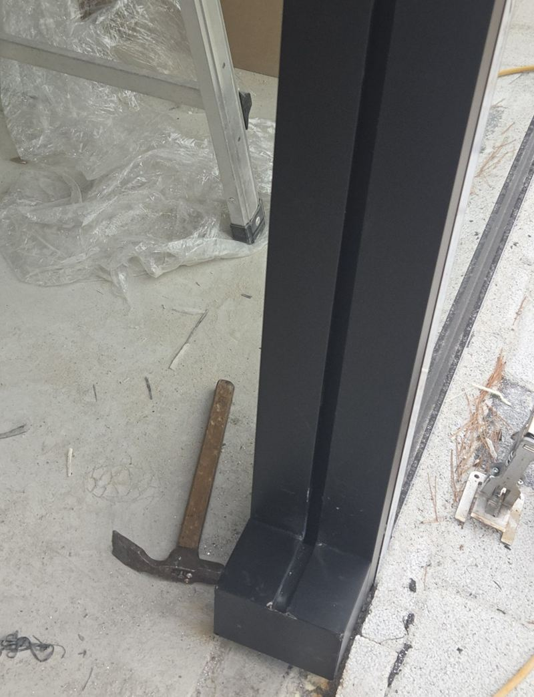
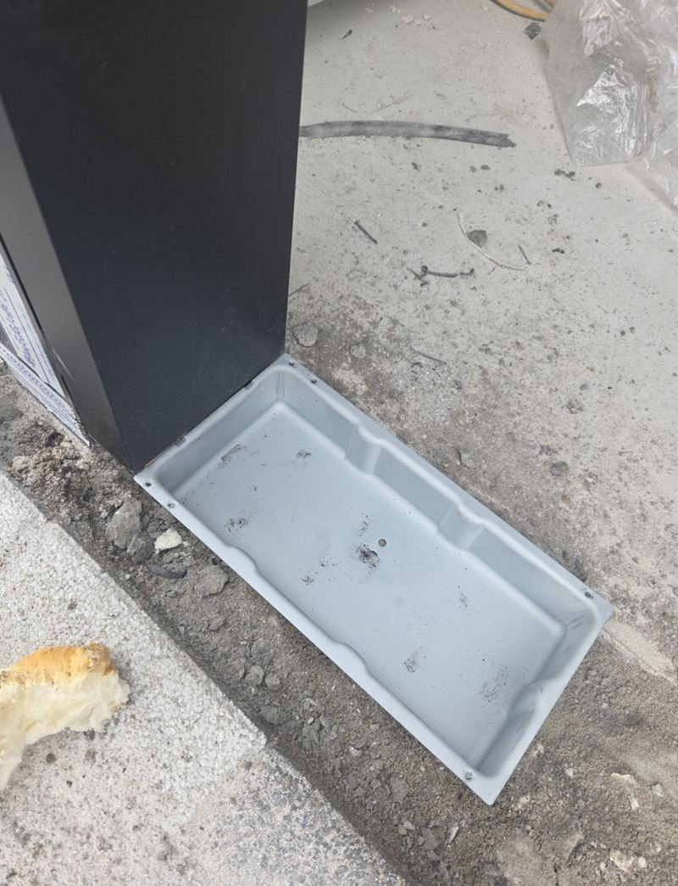
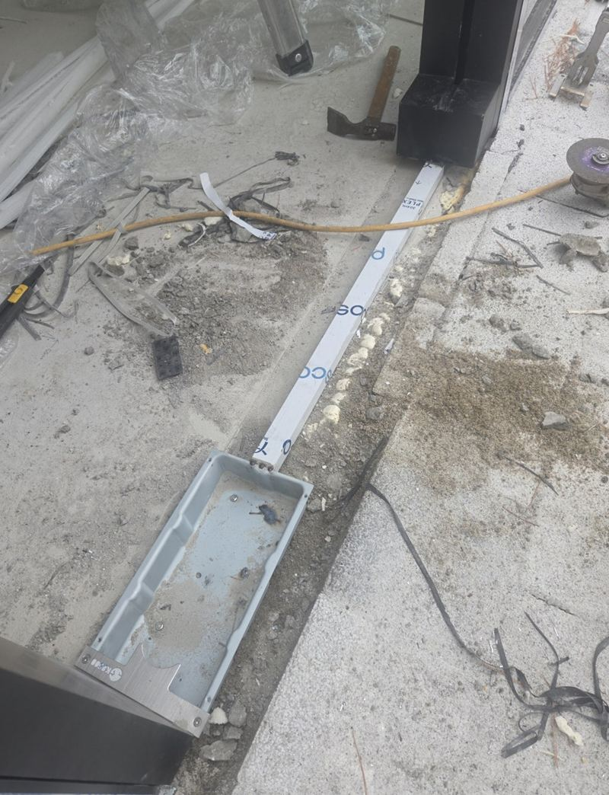
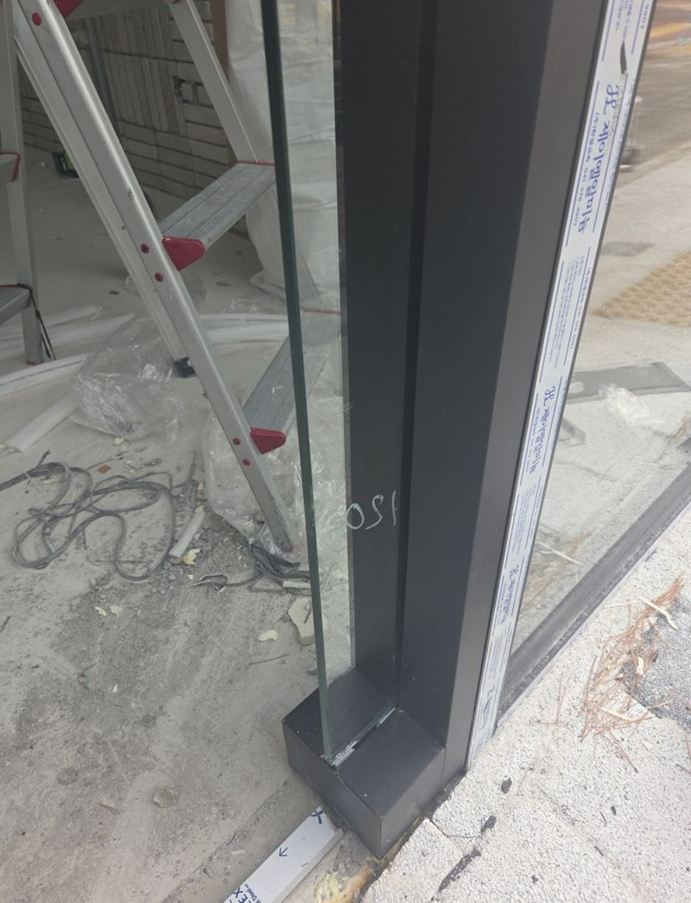

안성 음식점·학원 상가 유리문 힌지 시공 방법

 시공 전시공 후
시공 전시공 후← 밀어서 전후 비교 →
학원 원장님이 휴대폰으로 보여 주신 사진 한 장에서 시작한 현장이에요. 문틀이 안 보이고 유리끼리 맞닿은 시원한 출입구였죠. 다만 일반 규격보다 폭이 넓은 유리였고, 아이들이 하루에도 수십 번 밀고 드나드는 문이었어요. 그래서 보이는 부분보다 바닥과 천장 속 고정 구조에 더 공을 들였어요.
시공 전에 함께 정한 것
- 개구부 실측폭과 높이를 다시 재고, 바닥 마감이 끝난 높이를 기준으로 유리 크기를 정했어요.
- 문 열림 각도복도 동선과 신발장 위치를 보고 문이 어느 쪽으로, 얼마나 열릴지 정했어요.
- 하중 받을 자리무거운 유리 무게가 바닥 힌지와 상부로 나뉘어 전달되도록 고정 지점을 계산했어요.

바닥을 파고 힌지를 묻기까지
프레임 없는 유리문은 바닥에 묻힌 힌지(플로어 힌지)가 문 전체 무게를 받쳐요. 표시한 위치의 바닥 마감을 걷어 내고 콘크리트를 일부 깨서 힌지 상자가 들어갈 자리를 만들었어요. 수평 기준선을 먼저 잡아야 문이 한쪽으로 쏠리지 않아요.


힌지를 넣고 고정판을 체결한 뒤, 유리를 걸기 전에 한 번 돌려 보며 각도와 마찰을 확인했어요.


흔들림을 잡는 숨은 보강
폭이 넓은 유리는 닫힐 때마다 생기는 충격이 반복되면 비틀릴 수 있어요. 위쪽에 가이드를 하나 더 달고, 옆면에 보강 앵글을 넣어 고정점을 여러 곳으로 나눴어요. 고정창은 투명 브라켓으로 잡아서 시야를 가리지 않게 했어요. 실리콘은 최소한으로만 써서 유리 라인이 깔끔하게 보이도록 마감했어요.


마지막으로 닫히는 속도를 조절하고, 여러 번 밀고 당겨 보며 유리 떨림이 없는지 확인했어요.
이럴 때 상가 유리문 공사를 많이 맡겨요
- 인테리어 중 출입문만 따로 맡기고 싶어요학원·카페·음식점 인테리어 중간에 유리문과 고정창만 따로 맡기는 경우가 많아요.
- 기존 유리문이 처지고 바닥에 긁혀요바닥 힌지나 상부 피봇이 낡은 경우예요. 힌지 교체로 해결되는지 먼저 봐요.
- 문이 너무 세게 닫혀요힌지 속도 조절이 풀렸을 수 있어요. 아이들이 많은 공간이면 천천히 닫히게 맞춰요.
- 샘플 사진처럼 만들 수 있나요원하시는 문 사진을 보내 주시면 현장 구조에서 가능한 방식인지 알려 드려요.
상가 유리문 시공, 이런 걸 많이 물어보세요
프레임 없는 유리문은 약하지 않나요?
강화유리 자체는 단단하지만 고정 구조가 중요해요. 바닥 힌지와 상부 보강이 제대로 들어가야 오래 써요.
인테리어 공사 중에 같이 할 수 있나요?
네, 이 현장도 학원 인테리어 중간에 들어갔어요. 바닥 마감 전후 일정을 인테리어 쪽과 맞추면 깔끔해요.
음식점 출입문도 같은 방식인가요?
구조는 비슷해요. 주방 열기나 출입 빈도에 따라 문 크기와 닫힘 속도를 다르게 맞춰요.
기존 힌지가 고장 난 문도 고치나요?
바닥 힌지만 교체하는 작업도 해요. 문이 처지거나 저절로 안 닫힌다면 사진을 보내 주세요.
유리문 두께는 어떻게 정하나요?
문 크기와 쓰는 곳에 따라 달라요. 큰 출입문일수록 두꺼운 강화유리와 튼튼한 힌지를 함께 골라요.
고정창과 문 사이 틈은 안 생기나요?
간격을 일정하게 맞추고 투명 브라켓으로 잡아서, 틈 없이 이어진 것처럼 보이게 마감해요.
유리문에 학원 이름 시트지도 붙여 주나요?
시트지 작업은 간판·시트 업체에 맡기시는 게 깔끔해요. 유리를 설치한 뒤 바로 붙일 수 있게 일정만 맞춰 드려요.
다른 유리문·자동문 현장
- 은평 장식장 유리문 처짐, 경첩 교체 비용 · 블로그
- 평택 자동문 철거 후 강화유리문 설치 견적 · 블로그
- 평택 건물 출입문 센서 자동문 시공 방법 · 블로그
- 평택 강화유리 슬라이딩 자동문 유리 교체 방법 · 블로그
- 평택 수동·자동 셔터문 종류와 설치 비용 · 블로그
- 평택 유리도어 종류별 특징과 설치 비용 · 블로그
- 송도 학원 유리도어·유리창 안전 시공 방법 · 블로그
출입구 전체 사진과 원하시는 문 모양 참고 사진을 함께 보내 주세요.
전화 상담 010-4517-9872